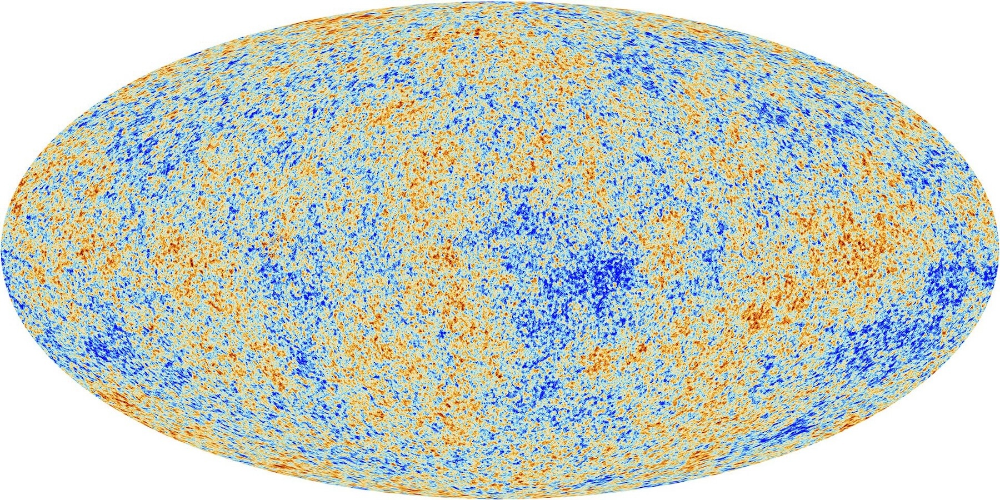

CMB Compression

Background
The Cosmic Microwave Background (CMB) is the oldest light we can observe, the afterglow of the hot plasma that filled the early universe, released when the universe was just 380,000 years old. Its temperature fluctuations across the sky encode an extraordinary amount of cosmological information: the geometry of the universe, the amount of dark matter and baryonic matter, the primordial power spectrum of density perturbations, and much more.
Modern CMB datasets such as those from the Planck satellite comprise thousands of data points in multipole space ($\ell \sim 2$ to $\sim 2500$), and the associated likelihood functions are both expensive to evaluate and notoriously involved to set up. Getting the full Planck likelihood running in a custom inference pipeline is a significant technical undertaking. For researchers exploring phenomenological extensions beyond $\Lambda$CDM — say, testing how the CMB constrains a free expansion history $H(z)$ across many redshift bins — this complexity becomes a real practical barrier, compounded by the fact that such analyses may require the likelihood to be evaluated millions of times across MCMC chains.
The solution is to compress the CMB data: reduce the high-dimensional likelihood to a small set of derived summary statistics that capture nearly all the information relevant for the parameters of interest. The compressed likelihood is not only fast to evaluate but trivial to implement in any standard inference pipeline, making CMB constraints accessible without the overhead of the full likelihood machinery.
My Work
As part of my work on the expansion-history analysis with DESI DR2, I developed and validated a simple but accurate compression of the CMB likelihood that is tailored for dark energy constraints. The compression reduces the full Planck likelihood to just a few summary parameters, while preserving the information content relevant for $H(z)$ and the matter density $\Omega_m$. I validated that constraints on our phenomenological dark energy parameterisation are virtually identical when using the full CMB likelihood versus the compressed one, confirming that no significant information is lost.
This compressed likelihood was then used throughout our expansion-history analysis, enabling efficient joint fits to DESI BAO, CMB, and Type Ia supernova data.
In a follow-up project with undergraduate student Amogh Srivastav, we turned this into a fully public tool called CMBComp. It provides five compressed likelihood variants covering dark energy, spatial curvature, and massive neutrinos, each fast to evaluate and trivial to drop into any standard inference pipeline. The goal was to make CMB constraints genuinely accessible: if you want to include Planck data in your analysis without wrestling with the full likelihood machinery, CMBComp is designed to just work.